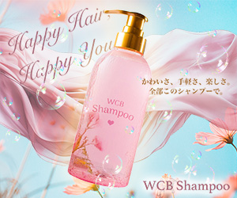
WCB Shampoo
（バナー練習10本ノックより）
- Concept
- 人気メーカーから新たに発売されたシャンプー。思わず手に取りたくなるかわいいデザインがポイント。Happy Hair, Happy You! かわいさ、手軽さ、楽しさ。全部このシャンプーで。
- Point
- 可愛らしさと爽やかさのある背景画像を組み合わせ、ボトルの可愛らしさを際立たせる躍動感のあるデザインにしました。
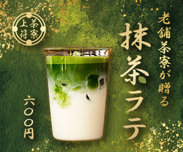
茶寮上符
（バナー練習10本ノックより）
- Concept
- 昔ながらの和菓子が人気の老舗から、若者層の呼び込みのために新たに開発されたアイス抹茶ラテ。本格的な抹茶を気軽に楽しんでもらいたい。 老舗茶寮が贈る 抹茶ラテ 600 円
- Point
- ゴールドや落ち着いたグリーンを使用し、老舗のこだわりのある抹茶の高級感を表現しました。
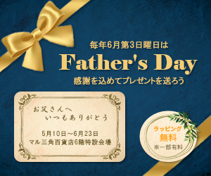

架空バナー作成「父の日フェア」
- Concept
- 父の日の贈り物、購入する娘さんや主婦がターゲット。毎年6月第3日曜日は父の日 感謝を込めてプレゼントを送ろう。ラッピング無料を記載
- Point
- 落ち着いた色味で一目で父の日のプレゼントだと分かり、メッセージカードを載せることで実際にプレゼントを渡すことを想像できようなデザインにしました。

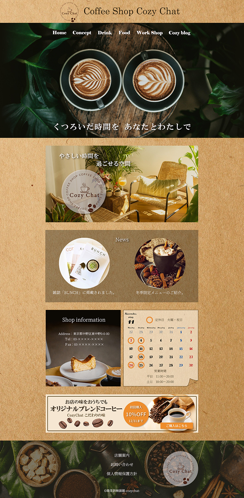

架空サイトのデザインカンプ
Coffee Shop「Cozy chat」
職業訓練課題デザインカンプ
※こちらはデザインカンプのみでWebサイトは作成しておりません
- Concept
- "くつろいだ時間を あなたとわたしで
やさしい時間を過ごせる空間「Cozy chat」"
落ちついた感じのあたたかなイメージ、20代後半～40代女性を意識した雰囲気で。
記載内容は全て指示通り。バナーもオリジナルで作成。 - Point
- 職業訓練の課題でデザインカンプを作成しました。
キャッチコピーの「くつろいだ時間」や「やさしい時間」をWebサイトからも感じられるように意識して作成しました。
コンセプトやイメージを大切にし、ナチュラルで落ち着いた色味で、全体の背景画像はコーヒー豆の袋を表現。
全てフリー素材の画像を使用していますが、明るさやトーンがバラバラだったため、統一感が出るように色味やトーンを加工しています。 - 使用ツール
- Photoshop
- 制作期間
- デザイン2日
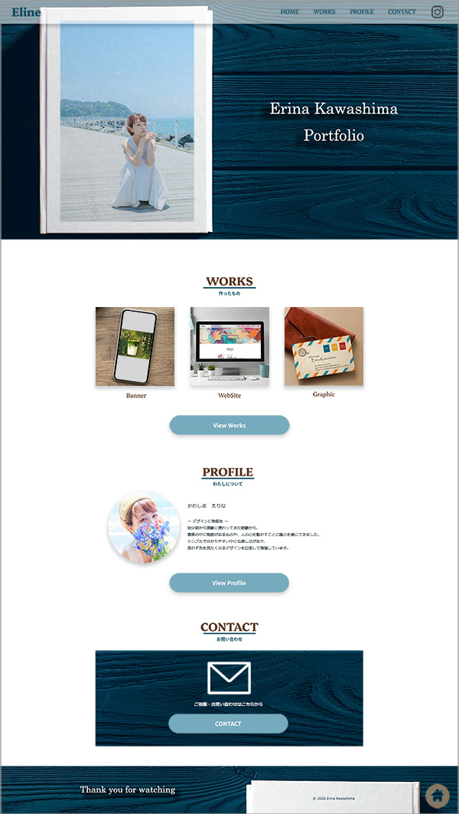
Portfolioサイト
- Concept
- 転職活動での書類通過や採用担当者の方に自身の作品やスキルを見てもらい、「会いたい」「一緒に働きたい」と思っていただけるようなPortfolioサイトを目指して作成しました。
- Point
- 採用担当者の視点を意識して、分かりやすく見やすいシンプルさの中に、自分らしさも表現できるように意識しました。
IndigoやLight BlueをベースにTopページや枠組みは落ち着いた配色に。
Profileページは、様々な仕事や表現活動をしてきた自分の個性も表現できるようにカラフルな写真を使用し芸歴も掲載しました。 - 使用ツール
- Figma、Photoshop、Dreamweaver
- 制作期間
- デザイン2日 / コーディング3週間
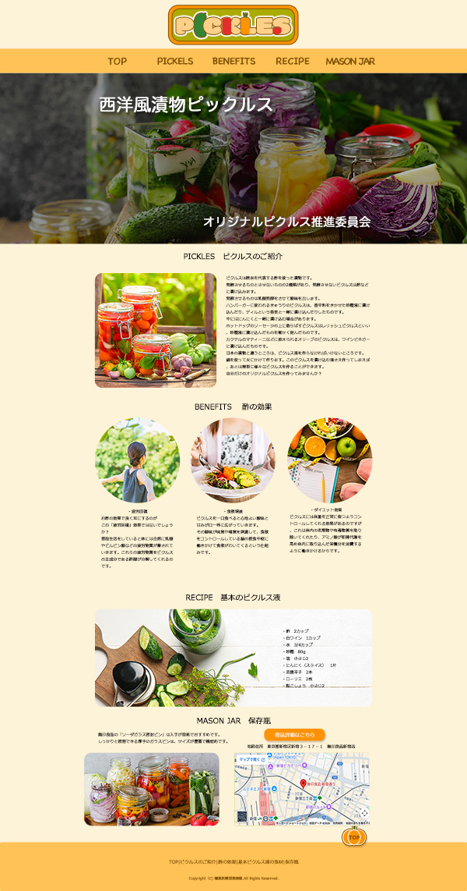

架空Webサイト「Pickles」
職業訓練課題ピックルスWebサイト
- Concept
- メインタイトル「西洋風漬物ピックルス」
サブタイトル「オリジナルピクルス推進委員会」
記載内容は全て指示通り。 - Point
- 職業訓練の課題としてWebサイトを作成しました。
ピクルスを幅広い世代の方に受け入れていただくために、温かな色味を採用し、彩り鮮やかな写真を使いました。
ロゴはお子様にも受け入れやすいように、可愛らしくて丸みのあるデザインに。
こちらのロゴはPhotoshopのみで作成しました。 - 使用ツール
- Photoshop、Dreamweaver
- 制作期間
- デザイン1日 / コーディング2日
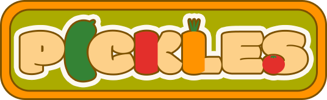
こちらは仮画像です。サイト完成後に差し替えます。
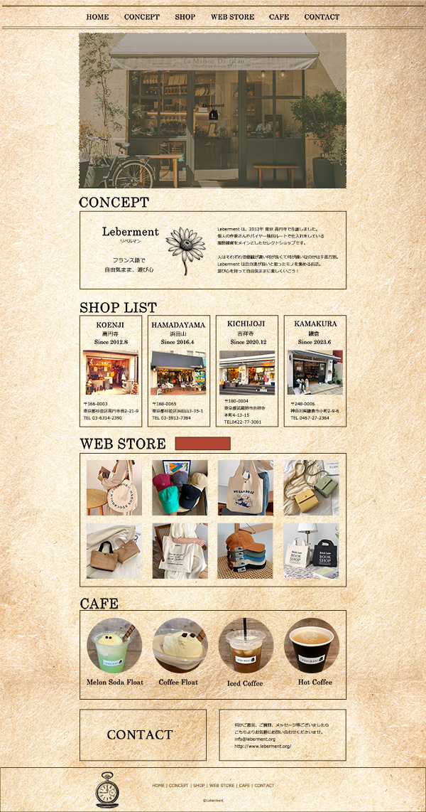
Select Shop Leberment
前職で勤めていた服飾雑貨やアパレルを扱うセレクトショップの内容を使わせていただき、Webサイトを作成中です。
※オーナー様から使用、掲載許可済み。サンプル品として写真は実店舗と異なるものも使用しています。
- Concept
- 『Leberment (リベルマン) 』遊び心を持って自由気ままに楽しくいこう！
人はそれぞれ価値観が違い何が良くて何が嫌いなのかは千差万別。
Lebermentは自分達が良いと思ったモノを集めるお店。 - Point
- オーナー様のこだわりやコンセプトを大切にし、オシャレな中にどこか一癖ある個性的で可愛い商品を引き立たせるようにシンプルな色味で、店内カラーやナチュラルで海外風なテイストをサイトにも使用。店内ディスプレイに使用している英字新聞や英書をデザインの参考にしました。
WebStoreへの誘導も考慮し、目立つボタンに。
元のサイトはページ数やリンク先が多く、情報が分かりにくいところがあったので、1ページで全ての情報が分かるように変更しました。 - 使用ツール
- Figma、Photoshop、Dreamweaver
- 制作期間
- デザイン 2日 / コーディング
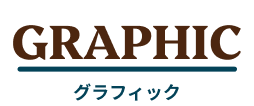
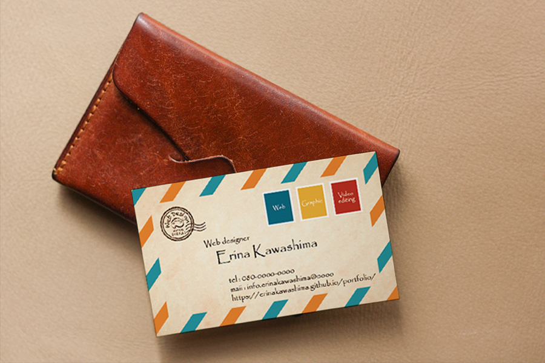
名刺サンプル
エアメール風の名刺を作成しました。
- Concept
- Webデザインやグラフィックデザイン、動画編集などもできるデザイナーの名刺。
何ができるのか分かりやすく、印象に残るデザインのもの。 - Point
- エアメール風のデザインにすることで、多くの人と繋がり想いを届け、お手紙を渡すような形で印象に残る名刺にしました。ロゴをスタンプ風に、Web、Graphic、Video editingの表記を切手風のデザインにしました。
- 使用ツール
- Illustrator、Photoshop
- 制作期間
- デザイン 2日

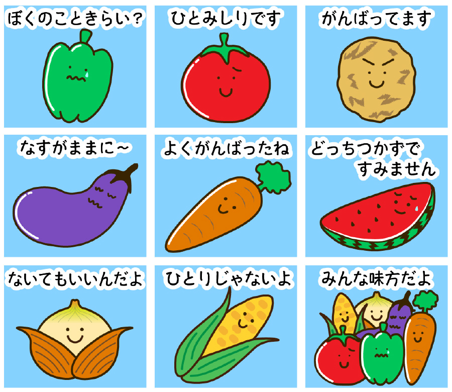
LINE Stamp
LINEスタンプを作成しました。
- Concept
- "ネガティブピーマンとやさしい野菜たち"
- Point
- カラフルなイラストでスタンプを作りたいと思い、野菜をモチーフにしました。
子供に嫌われがちなピーマンをメインに、どこかほっとする可愛らしい野菜を目指しました。 - 使用ツール
- Illustrator
- 制作期間
- デザイン 2日
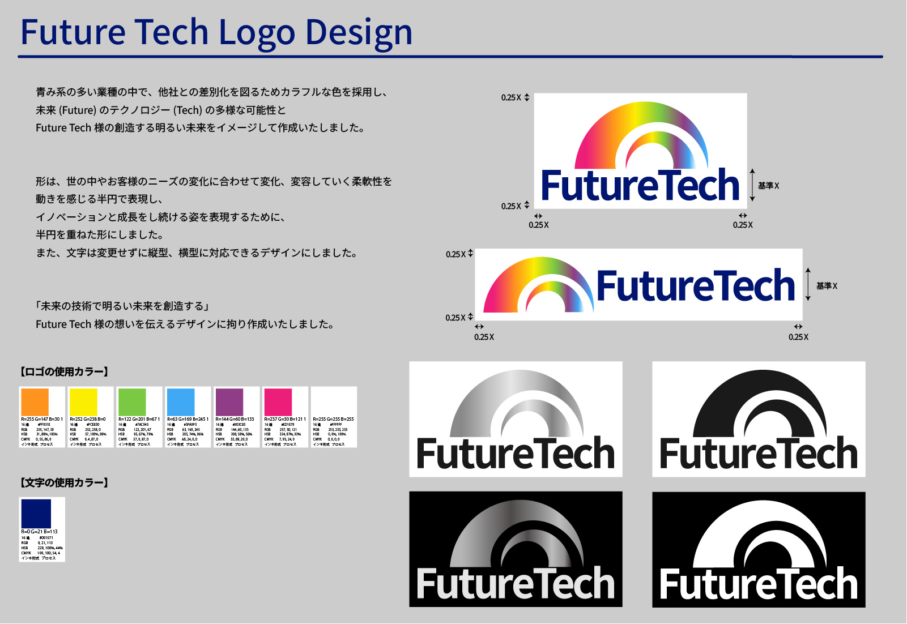
Logo提案書
架空企業のLogoを作成しました。
- Concept
- 「未来の技術で明るい未来を創造する」を理念とする架空のIT企業、株式会社FutureTechのロゴデザイン
- Point
- 青み系のロゴが多いIT業界の中で、他社との差別化を図るためカラフルな色を採用し、未来(Future)のテクノロジー(Tech)の多様な可能性とFutureTech様の創造する明るい未来をイメージして作成いたしました。
形は、世の中やお客様のニーズの変化に合わせて変化、変容していく柔軟性を動きを感じる半円で表現し、イノベーションと成長をし続ける姿を表現するために、半円を重ねた形に。
また、文字は変更せずに縦型、横型に対応できるデザインにしました。
サイズの指示やモノクロバージョンなども記載しております。 - 使用ツール
- Illustrator
- 制作期間
- デザイン 1日
ショート動画
SNS用のショート動画を作成しました
- 【Concept】
- 宮古島旅行の際にiPhoneで撮影した動画を使った、宮古島の美しい海や風景を集めた40秒のショート動画。
- 【Point】
- シンプルなショート動画ですが、動画の切り替え時に違和感のないようなエフェクトや、文字のフェードイン、フェードアウトのタイミングに拘って作成しました。
- 使用ツール
- PremierePro
- 制作期間
- 動画編集 1日